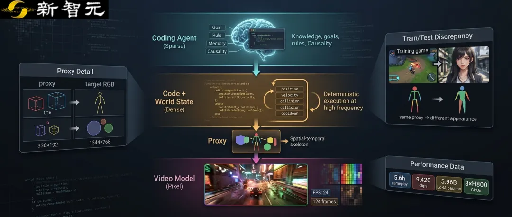
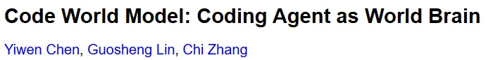
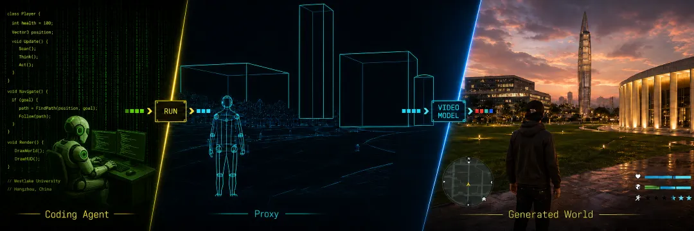
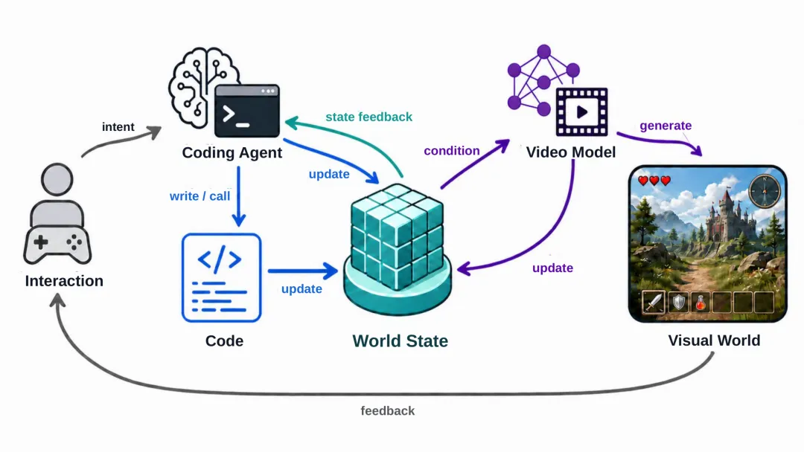
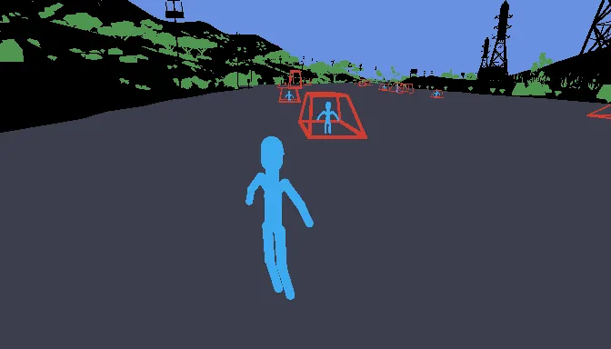
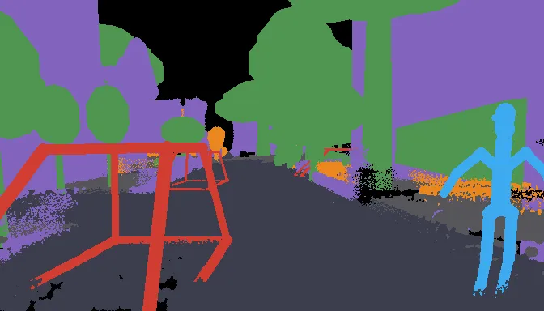
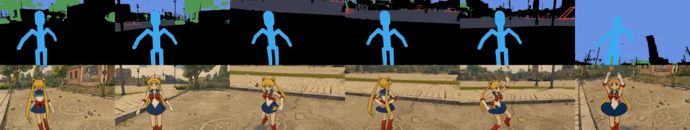
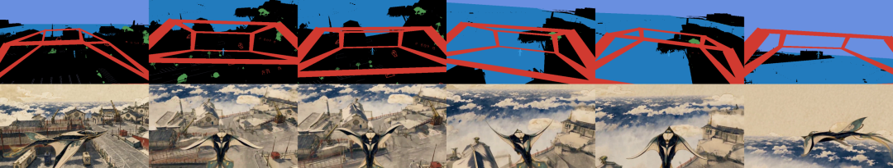
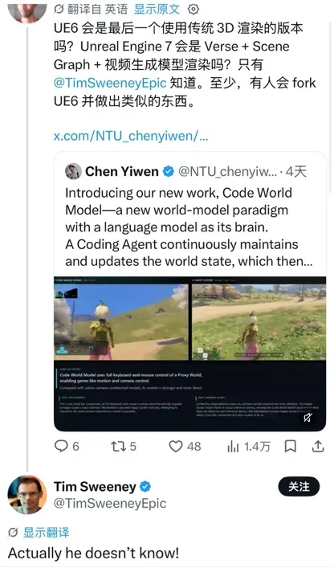

新智元报道
新智元报道

近年来，视频生成模型在清晰度、时序一致性和可控性上快速进步。给定文本、图像、相机轨迹或玩家动作，模型已经能够合成连贯的后续画面，也让「可交互视频世界」逐渐从概念走向可观看、可操作的原型。
但会延续画面，并不等于会运行一个世界。镜头中的位移和碰撞只是交互最直观的一层；在更复杂的环境里，角色还有目标、身份与关系，事件受到规则约束，也会留下跨越较长时间的因果后果。许多状态甚至发生在镜头之外，却仍会改变之后的剧情与行动。仅凭局部像素预测下一段观察，很难显式维护这些高层语义。
复杂世界首先需要「理解为什么」。目标、规则、记忆和因果链条通常无法从当前一帧直接读出，却决定了世界下一步应该怎样变化。语言模型具备的知识调用、推理、规划与编程能力，适合处理这类低频但高复杂度的决策，并将决策进一步落实为可执行规则。
另一个常被忽略的事实是：游戏视频并非世界本身，而是程序执行结果被渲染后的像素投影。现阶段，游戏与模拟器仍构成视频世界模型最主要的可交互数据来源。若只保留动作与像素，再让视频模型直接学习二者之间的映射，就等于绕过原本存在的程序、规则和显式 world state，转而要求模型从视觉结果中反向拟合整套程序行为。这样的学习路径不仅低效，也把「世界如何推演」和「世界如何呈现」耦合进了同一个模型。
基于这一观察，西湖大学AGI Lab与南洋理工大学的研究团队提出了Code World Model，一种以语言模型为「大脑」的新型世界模型范式。其核心思路是让coding agent通过持续编写、调用和修改code，维护并更新可执行的 world state；与当前观察相关的状态再被转换为proxy，用来指导video model生成精细的视觉画面。

论文链接：https://arxiv.org/abs/2608.25927
项目主页：https://buaacyw.github.io/cwm/
代码仓库：https://github.com/buaacyw/code-world-model
这里的语言模型并不取代视频模型。Code World Model重新划分了两者的职责：知识、目标、规则与长期因果由 coding agent 和 code 负责，外观、运动细节、光照与纹理由 video model 负责。换句话说，前者决定世界中发生什么，后者决定这一切看起来如何。

图 1 Code World Model的核心分工：coding agent通过code演化world state，proxy将相关状态转换为视觉条件，video model生成最终画面。

围绕上述分工，Code World Model 将世界的运行过程拆成三个彼此衔接的部分。
coding agent：理解玩家意图与新事件，调用世界知识，推理潜在后果，并决定需要执行、组合或修改哪些机制。
code：以更高频率执行位置、属性、碰撞、冷却和事件触发等确定性更新，把高层决策变成可检查、可复用、可持续运行的规则。
video model：读取演化后的状态条件，利用大规模视觉数据中学到的外观、运动与交互先验，生成带有丰富纹理、光照和局部动态的视觉观察。
这种分工也对应不同的计算频率。coding agent 只需在出现新目标、复杂事件，或现有机制不足时进行稀疏决策；一旦决策被写入 code，程序便可持续执行密集的状态更新。
更重要的是，coding agent 改写的不只是某一时刻的数值，还可以改变世界此后遵循的运行方式。

图 2 Code World Model 总体框架。完整构想包含视觉反馈；当前原型重点验证 coding agent / code → world state → proxy → video model 的前向链路。
完成职责拆分后，还剩下一个关键的接口问题：coding agent 与 code 维护的是可执行状态，video model 接收的却是文本、图像或视频 token。二者之间需要一种既容易由程序构造，又能够提供逐帧空间约束的共同语言。
结构化文本足够灵活，却很难稳定描述每一帧的实体位置、相对关系、运动轨迹和精确相机变化；完整构建并渲染 3D 世界虽然控制更强，又会重新引入资产、几何、材质、动画和渲染管线的高昂成本。
为此，这项工作引入了 proxy。它从 world state 中提取当前观察真正需要遵循的信息，并将其组织成粗粒度的视觉表示。轻量、确定性的编译器把 proxy 渲染为 proxy video，再与结构化文本一同送入 video model。
文本负责说明「是谁、是什么、要做什么」，proxy 则规定「在哪里、怎样移动、镜头怎样拍」。
proxy 可以表达相机与视角、实体位置和朝向、尺度与轨迹、场景布局和遮挡，以及当前交互所需的粗粒度状态；纹理、材质、精细光照和完整局部运动则有意留给 video model。文章将这一设计原则概括为：只保留当前观察所需的最小充分状态，在控制能力与状态编码成本之间取得平衡。
当前实现中的 proxy 在宽和高上都只有目标视频的四分之一，像素量约为目标的 1/16。它由简单、可复用的几何 primitive 组合而成，不需要 production-quality 资产，却能提供逐帧、可编辑的时空骨架。
要让 video model 学会理解 proxy，训练样本需要同时包含 proxy video、结构化文本与目标 RGB 视频，而且 proxy 与 RGB 必须在时间、相机和实体身份上严格对齐。
游戏的运行时记录天然保留了这种对应关系。研究团队从同一次 gameplay execution 中同步记录 RGB、相机状态、实体身份、位置与朝向、近似尺度、场景布局和交互状态，再通过 code 离线编译 proxy。由于两者来自同一次执行，每一帧都能建立一一对应，跨帧身份也可以稳定映射。

图 3a 游戏数据中的目标 RGB（上）与同帧 proxy（下）。

图 3b 真实视频中的目标 RGB（上），以及利用相机标定、3D 重建和物体标注离线构造的 proxy（下）。
论文使用的 gameplay 数据包含157段录制，总计约5.6小时源视频。研究团队以2秒间隔采样，得到9,420个5秒训练片段；每个RGB目标包含124 帧，分辨率为1344×768、帧率为24FPS，对应的proxy同样包含124帧，分辨率为336×192，并结合 fixed-log depth 与 categorical semantic-ID map。
同一份运行时记录还可以被重新编译成覆盖范围和信息粒度不同的 proxy，无需重新录制RGB。
论文还在KITTI-360上展示了真实视频proxy-observation pair的离线构造流程，以说明这一接口向真实数据扩展的可能性；当前video model的适配仍只使用配对的gameplay数据。
当前原型采用MiniMax-H3的Ref2VA backbone作为video model，对全部50个transformer block进行rank-128 LoRA适配，可训练参数约为 5.96 亿。训练使用8张NVIDIA H800 GPU，共完成3个 epoch、3,534个优化步骤。
推理阶段由 GPT-5.6 Sol 担任 coding agent。系统向其提供基础玩家控制、碰撞处理、运行时更新循环、现有 game-engine scene 与 gameplay logic 模板，以及训练阶段使用的 proxy primitive。coding agent 可以组合、扩展和改写这些 code，构造简单、可执行、可由玩家控制的世界；其中的粗粒度 3D 几何只用于表达 proxy，并不直接充当最终画面。
对于每个 5 秒片段，GPT Image 2 根据首帧 proxy 与文本生成 appearance anchor；MiniMax-H3 再结合首帧、完整 proxy sequence 和文本，生成 124 帧、1344×768、24 FPS 的 RGB 视频。
较长视频通过带有 34 帧重叠的滑动窗口生成：后一个窗口继承前一窗口末尾的 RGB context，并复用同一 appearance anchor，以维持局部连续性和整体身份外观。
定性结果显示，即使只使用约5.6小时gameplay source video进行LoRA适配，模型仍能在角色、环境和风格明显偏离训练外观时，遵循proxy指定的人物位置、动作轨迹、场景布局与相机运动，同时补充丰富的纹理、光照和局部动态。

图 4 proxy提供人物位置与动作轨迹，video model将同一粗粒度骨架呈现为不同身份和画风的角色。上：proxy；下：生成结果。

图 5 简单几何primitive对复杂物体与相机运动施加约束。上：proxy；下：生成结果。
例如，同一种coarse human primitive可以被呈现为身份和艺术风格完全不同的角色；wireframe或box可以约束车辆、船只及其他复杂物体的位置与大致运动；同一套proxy interface还能够表达奔跑、舞蹈、游泳、坠落和相机环绕。
由此可以看到，proxy固定的是当前观察必须遵循的时空骨架，而不是训练游戏的资产和画风。
项目主页还给出了与 action-或 camera-conditioned video world model 的视频对比。
该比较关注的是控制粒度与视觉结果：proxy 直接提供逐帧实体运动和视角变化，因此能施加更细粒度、更直接的时空约束；论文并未把这组结果表述为 inference latency 对比。

网友评论到，「虚幻引擎6会是最后一个用传统3D方法创造游戏的引擎吗？或许虚幻引擎7就会用类似的技术方案了。只有虚幻引擎CEO Tim知道答案」
随后Tim也来围观道，「我也不知道！」
结语：先决定世界发生什么，再生成它看起来如何
过去的video world model主要学习「观察如何继续」。Code World Model则把问题向前推进了一步：在生成下一段观察之前，先维护世界当前是什么、遵循哪些规则，以及一次事件的后果为何会持续。
一个真正开放的生成世界，既需要视频模型的视觉想象力，也需要能够维护知识、目标、规则、关系与因果后果的执行机制。Code World Model的核心可以浓缩为一句话：让code决定世界中发生什么，让video model决定这一切看起来如何。
参考资料：
https://arxiv.org/abs/2608.25927
编辑：LRST